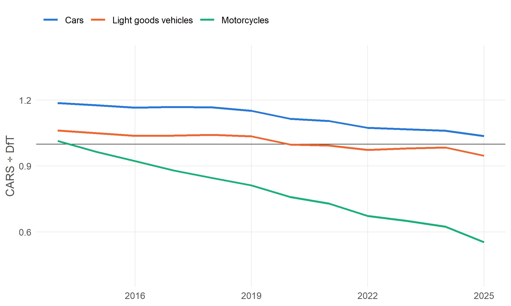
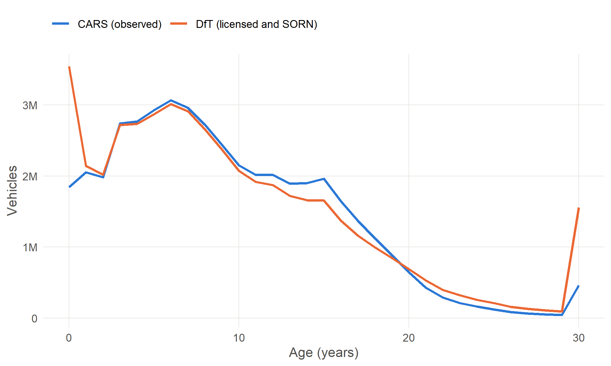

13 How good is the data?
No administrative dataset is perfect, and this one combines three. This chapter summarises how far the CARS data can be relied on, mainly by comparing it with DfT’s official counts of vehicles. The pipeline’s data quality report (Data quality report, in the appendices) has every check in detail.
13.1 Comparison with DfT vehicle counts
DfT’s vehicle licensing statistics count every vehicle on the DVLA register at the end of each year, licensed or SORN. The CARS data counts the vehicles observed (tested) in each year. The two should not agree exactly:
- vehicles under three have no MOT; CARS includes them once they have had their first test, but misses the newest ones, not yet tested;
- SORN vehicles are in DfT’s count but are not tested;
- heavy goods vehicles, large buses and most historic vehicles do not take an MOT;
- CARS carries a vehicle’s postcode area forward for about two years after its last MOT (Chapter 6), so a vehicle scrapped or exported after its last test stays in the CARS count for about two years after it has left DfT’s.
For cars and vans aged three and over the two sources are close. CARS counts somewhat more cars than DfT (1.17 times as many in 2018, 1.04 in 2025), mainly because a car’s postcode area is carried forward for about two years after its last MOT, so recently scrapped cars are still counted. Counting vehicles of all ages, CARS falls below DfT in the most recent years, because vehicles first registered then have not yet been tested (Chapter 14).
Motorcycles are the exception: CARS observes a falling share of the motorcycles on DfT’s register, 0.55 of those aged three and over in 2025. Many motorcycles are kept on SORN or used seasonally, and so are tested irregularly.
NoteTo be confirmed
Whether the falling motorcycle ratio is explained by SORN and irregular testing, or partly by how motorcycles are classified or linked.

By age (Figure 13.2), the sources agree well between about 3 and 16 years. Younger vehicles are missing from CARS because they have not had an MOT. Older vehicles are increasingly missing because many are kept on SORN, or are exempt from the MOT once 40 years old.
13.2 Completeness of key fields
| Field | Missing | Note |
|---|---|---|
Make (make_final) |
0.56% | |
Model (model_final) |
4.27% | Mostly where the recorded model is a placeholder such as UNKNOWN |
| Body type | 3.08% | |
Fuel (fuel) |
0% | “Other” for a small number |
Engine size (engine_cc) |
0.85% | Mostly tractors and plant |
CO2 (co2) |
20.88% | Mostly older vehicles, registered before CO2 was recorded |
Euro status (euro_status) |
8.72% | Includes values assumed from the date |
Test class (test_class) |
7.56% | |
| First-use date | 0% | From DVSA for 82.3%, NA% of vehicles |
13.3 Known issues
- The final years are incomplete. 2025 is a partial year, and the youngest vehicles are missing from the last three years (Chapter 14).
- Northern Ireland vehicles are included, but the test class is not supplied for them, and testing there was disrupted in 2020.
- 2005 appears to be of lower quality than later years, and some CARS reports start comparisons in 2006.
- DVLA records describing another vehicle. Where a registration has moved between vehicles, the DVLA record may describe the wrong one. The pipeline detects the clear cases and does not use their values; some subtler cases will remain.
- Make and model matching is very good for common vehicles and weaker for rare ones, motorcycles and specialist vehicles.
model_confidenceandmodel_methodshow how each match was made.
NoteTo be written
Quality of the Bristol stage: match rates for the anonymised MOT data to the MOT history, and for the VES lookups; and the share of mileage judged implausible, by year.